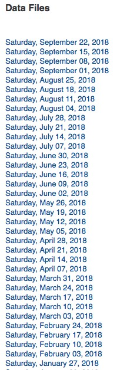

Web Scraping
Web scraping is a technique to automatically access and extract large amounts of information from a website, which can save a huge amount of time and effort. In this article, we will go through an easy example of how to automate downloading hundreds of files from the New York MTA. This is a great exercise for web scraping beginners who are looking to understand how to web scrape. Web scraping can be slightly intimidating, so this tutorial will break down the process of how to go about the process.
New York MTA Data
We will be downloading turnstile data from this site:
http://web.mta.info/developers/turnstile.html
Turnstile data is compiled every week from May 2010 to present, so hundreds of .txt files exist on the site. Below is a snippet of what some of the data looks like. Each date is a link to the .txt file that you can download.

It would be torturous to manually right click on each link and save to your desktop. Luckily, there's web-scraping!
Important notes about web scraping:
- Read through the website's Terms and Conditions to understand how you can legally use the data. Most sites prohibit you from using the data for commercial purposes.
- Make sure you are not downloading data at too rapid a rate because this may break the website. You may potentially be blocked from the site as well.
Inspecting the Website
The first thing that we need to do is to figure out where we can locate the links to the files we want to download inside the multiple levels of HTML tags. Simply put, there is a lot of code on a website page and we want to find the relevant pieces of code that contains our data. If you are not familiar with HTML tags, refer to W3Schools Tutorials. It is important to understand the basics of HTML in order to successfully web scrape.
On the website, right click and click on "Inspect". This allows you to see the raw code behind the site.

Once you've clicked on "Inspect", you should see this console pop up.

Console
Notice that on the top left of the console, there is an arrow symbol.

If you click on this arrow and then click on an area of the site itself, the code for that particular item will be highlighted in the console. I've clicked on the very first data file, Saturday, September 22, 2018 and the console has highlighted in blue the link to that particular file.
<a href="data/nyct/turnstile/turnstile_180922.txt">Saturday, September 22, 2018</a>
Notice that all the .txt files are inside the <a> tag following the line above. As you do more web scraping, you will find that the <a> is used for hyperlinks.
Now that we've identified the location of the links, let's get started on coding!
Python Code
We start by importing the following libraries.
import requests import urllib.request import time from bs4 import BeautifulSoup
Next, we set the url to the website and access the site with our requests library.
url = 'http://web.mta.info/developers/turnstile.html' response = requests.get(url)
If the access was successful, you should see the following output:

Next we parse the html with BeautifulSoup so that we can work with a nicer, nested BeautifulSoup data structure. If you are interested in learning more about this library, check out the BeatifulSoup documentation.
soup = BeautifulSoup(response.text, "html.parser")
We use the method .findAll to locate all of our <a> tags.
soup.findAll('a')
This code gives us every line of code that has an <a> tag. The information that we are interested in starts on line 36. Not all links are relevant to what we want, but most of it is, so we can easily slice from line 36. Below is a subset of what BeautifulSoup returns to us when we call the code above.

subset of all <a> tags
Next, let's extract the actual link that we want. Let's test out the first link.
one_a_tag = soup.findAll('a')[36] link = one_a_tag['href']
This code saves 'data/nyct/turnstile/turnstile_180922.txt' to our variable link. The full url to download the data is actually ' http://web.mta.info/developers/ data/nyct/turnstile/turnstile_180922.txt' which I discovered by clicking on the first data file on the website as a test. We can use our urllib.request library to download this file path to our computer. We provide request.urlretrieve with two parameters: file url and the filename. For my files, I named them "turnstile_180922.txt", "turnstile_180901", etc.
download_url = 'http://web.mta.info/developers/'+ link urllib.request.urlretrieve(download_url,'./'+link[link.find('/turnstile_')+1:])
Last but not least, we should include this line of code so that we can pause our code for a second so that we are not spamming the website with requests. This helps us avoid getting flagged as a spammer.
time.sleep(1)
Now that we understand how to download a file, let's try downloading the entire set of data files with a for loop. The code below contains the entire set of code for web scraping the NY MTA turnstile data.